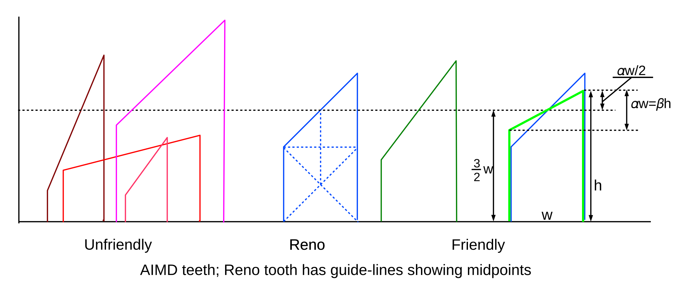
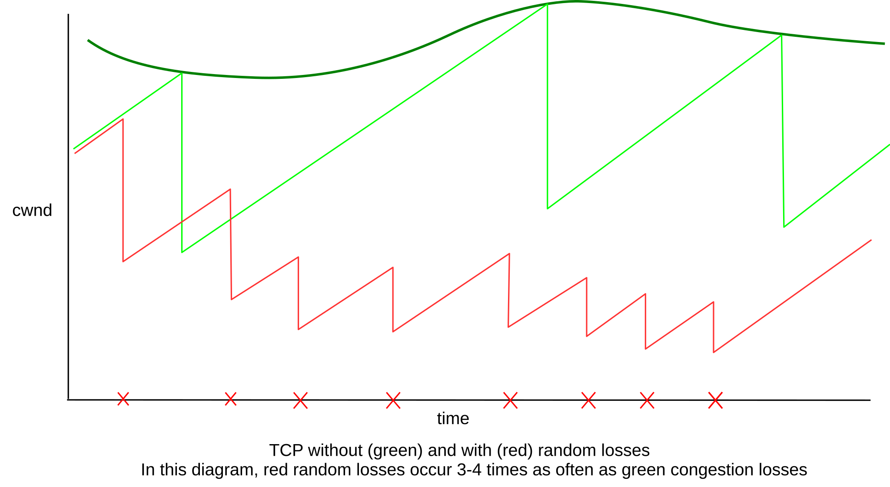
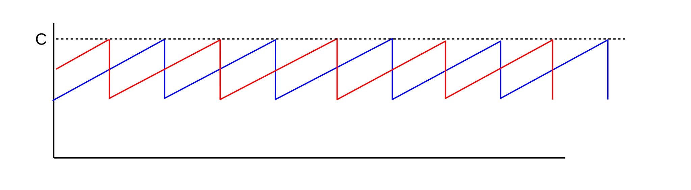

21 Further Dynamics of TCP¶
Is TCP Reno fair? Before we can ask that, we have to establish what we mean by fairness. We also look more carefully at the long-term behavior of TCP Reno (and Reno-like) connections, as the value of cwnd increases and decreases according to the TCP sawtooth. In particular we analyze the average cwnd; recall that the average cwnd divided by the RTT is the connection’s average throughput (we momentarily ignore here the fact that RTT is not constant, but the error this introduces is usually small).
In the end, after establishing a fundamental relationship between TCP Reno cwnd and the packet loss rate, we end up declaring that maybe the best we can do is to assert that whatever TCP Reno does is “Reno fair”, and establish a rule for “TCP [Reno] Friendliness”.
The latter part of this chapter discusses “Active Queue Management”: the idea that routers can make some assumptions about TCP traffic to better manage the flows passing through them. It turns out that routers can take advantage of TCP’s behavior to provide better overall performance.
The chapter closes with the “high-bandwidth TCP problem” and related TCP issues.
21.1 Notions of Fairness¶
There are several definitions for fair allocation of bandwidth among flows sharing a bottleneck link. One is equal-shares fairness; another is what we might call TCP-Reno fairness: to divide the bandwidth the way TCP Reno would. There are additional approaches to deciding what constitutes a fair allocation of bandwidth.
21.1.1 Max-Min Fairness¶
A natural generalization of equal-shares fairness to the case where some flows may be capped is max-min fairness, in which no flow bandwidth can be increased without decreasing some smaller flow rate. Alternatively, we maximize the bandwidth of the smallest-capacity flow, and then, with that flow fixed, maximize the flow with the next-smallest bandwidth, etc. A more intuitive explanation is that we distribute bandwidth in tiny increments equally among the flows, until the bandwidth is exhausted (meaning we have divided it equally), or one flow reaches its externally imposed bandwidth cap. At this point we continue incrementing among the remaining flows; any time we encounter a flow’s external cap we are done with it.
As an example, consider the following, where we have connections A–D, B–D and C–D, and where the A–R link has a bandwidth of 200 kbps and all other links are 1000 kbps. Starting from zero, we increment the allocations of each of the three connections until we get to 200 kbps per connection, at which point the A–D connection has maxed out the capacity of the A–R link. We then continue allocating the remaining 400 kbps equally between B–D and C–D, so they each end up with 400 kbps.
As another example, known as the parking-lot topology, suppose we have the following network:
There are four connections: one from A to D covering all three links, and three single-link connections A–B, B–C and C–D. Each link has the same bandwidth. If bandwidth allocations are incrementally distributed among the four connections, then the first point at which any link bandwidth is maxed out occurs when all four connections each have 50% of the link bandwidth; max-min fairness here means that each connection has an equal share.
21.1.2 Proportional Fairness¶
A bandwidth allocation of rates ⟨r1,r2,…,rN⟩ for N connections satisfies proportional fairness if it is a legal allocation of bandwidth, and for any other allocation ⟨s1,s2,…,sN⟩, the aggregate proportional change satisfies
(r1−s1)/s1 + (r2−s2)/s2 + … + (rN−sN)/sN < 0
Alternatively, proportional fairness means that the sum log(r1)+log(r2)+…+log(rN) is minimized. If the connections share only the bottleneck link, proportional fairness is achieved with equal shares. However, consider the following two-stage parking-lot network:
Suppose the A–B and B–C links have bandwidth 1 unit, and we have three connections A–B, B–C and A–C. Then a proportionally fair solution is to give the A–C link a bandwidth of 1/3 and each of the A–B and B–C links a bandwidth of 2/3 (so each link has a total bandwidth of 1). For any change 𝚫b in the bandwidth for the A–C link, the A–B and B–C links each change by -𝚫b. Equilibrium is achieved at the point where a 1% reduction in the A–C link results in two 0.5% increases, that is, the bandwidths are divided in proportion 1:2. Mathematically, if x is the throughput of the A–C connection, we are minimizing log(x) + 2log(1-x).
Proportional fairness partially addresses the problem of TCP Reno’s bias against long-RTT connections; specifically, TCP’s bias here is still not proportionally fair, but TCP’s response is closer to proportional fairness than it is to max-min fairness. See [HBT99].
21.2 TCP Reno loss rate versus cwnd¶
It turns out that we can express a connection’s average cwnd in terms of the packet loss rate, p, eg p = 10-4 = one packet lost in 10,000. The relationship comes by assuming that all packet losses are because the network ceiling was reached. We will also assume that, when the network ceiling is reached, only one packet is lost, although we can dispense with this by counting a “cluster” of related losses (within, say, one RTT) as a single loss event.
Let C represent the network ceiling – so that when cwnd reaches C a packet loss occurs. While C is constant only for a very stable network, C usually does not vary by much; we will assume here that it is constant. Then cwnd varies between C/2 and C, with packet drops occurring whenever cwnd = C is reached. Let N = C/2. Then between two consecutive packet loss events, that is, over one “tooth” of the TCP connection, a total of N+(N+1)+ … +2N packets are sent in N+1 flights; this sum can be expressed algebraically as 3/2 N(N+1) ≃ 1.5 N2. The loss rate is thus one packet out of every 1.5 N2, and the loss rate p is 1/(1.5 N2).
The average cwnd in this scenario is 3/2 N (that is, the average of N=cwndmin and 2N=cwndmax). If we let M = 3/2 N represent the average cwnd, cwndmean, we can express the above loss rate in terms of M:
the number of packets between losses is 2/3 M2, and so p=3/2 M-2.
Now let us solve this for M=cwndmean in terms of p; we get M2 = 3/2 p-1 and thus
M =cwndmean = 1.225 p-1/2
where 1.225 is the square root of 3/2. Seen in this form, a given network loss rate sets the window size; this loss rate is ultimately tied to the network capacity. If we are interested in the maximum cwnd instead of the mean, we multiply the above by 4/3.
From the above, the bandwidth available to a connection is now as follows (though RTT may not be constant):
bandwidth =cwnd/RTT = 1.225/(RTT × √p)
In [PFTK98] the authors consider a TCP Reno model that takes into account the measured frequency of coarse timeouts (in addition to fast-recovery responses leading to cwnd halving), and develop a related formula with additional terms.
As the bottleneck queue capacity increases, both cwnd and the number of packets between losses (1/p) increase, connected as above. Once the queue is large enough that the bottleneck link is 100% utilized, however, the bandwidth no longer increases.
Another way to view this formula is to recall that 1/p is the number of packets per tooth; that is, 1/p is the tooth “area”. Squaring both sides, the formula says that the TCP Reno tooth area is proportional to the square of the average tooth height (that is, to cwndmean) as the network capacity increases (that is, as cwndmean increases).
21.2.1 Irregular teeth¶
In the preceding, we assumed that all teeth were the same size. What if they are not? In [OKM96], this problem was considered under the assumption that every packet faces the same (small) loss probability (and so the intervals between packet losses are exponentially distributed). In this model, it turns out that the above formula still holds except the constant changes from 1.225 to 1.309833.
To understand how irregular teeth lead to a bigger constant, imagine sending a large number K of packets which encounter n losses. If the losses are regularly spaced, then the TCP graph will have n equally sized teeth, each with K/n packets. But if the n losses are randomly distributed, some teeth will be larger and some will be smaller. The average tooth height will be the same as in the regularly-spaced case (see exercise 7.0). However, the number of packets in any one tooth is generally related to the square of the height of that tooth, and so larger teeth will count disproportionately more. Thus, the random distribution will have a higher total number of packets delivered and thus a higher mean cwnd.
See also exercise 17.0, for a simple simulation that generates a numeric estimate for the constant 1.309833.
Note that losses at uniformly distributed random intervals may not be an ideal model for TCP either; in the presence of congestion, loss events are far from statistical independence. In particular, immediately following one loss another loss is unlikely to occur until the queue has time to fill up.
21.2.2 Unsynchronized TCP Losses¶
In 20.3.3 TCP Reno RTT bias we considered a model in which all loss events are fully synchronized; that is, whenever the queue becomes full, both TCP Reno connections always experience packet loss. In that model, if RTT2/RTT1 = 𝜆 then cwnd1/cwnd2 = 𝜆 and bandwidth1/bandwidth2 = 𝜆2, where cwnd1 and cwnd2 are the respective average values for cwnd.
What happens if loss events for two connections do not have such a neat one-to-one correspondence? We will derive the ratio of loss events (or, more precisely, TCP loss responses) for connection 1 versus connection 2 in terms of the bandwidth and RTT ratios, without using the synchronized-loss hypothesis.
Note that we are comparing the total number of loss events (or loss responses) here – the total number of TCP Reno teeth – over a large time interval, and not the relative per-packet loss probabilities. One connection might have numerically more losses than a second connection but, by dint of a smaller RTT, send more packets between its losses than the other connection and thus have fewer losses per packet.
Let losscount1 and losscount2 be the number of loss responses for each connection over a long time interval T. For i=1 and i=2, the ith connection’s per-packet loss probability is pi = losscounti/(bandwidthi × T) = (losscounti × RTTi)/(cwndi× T). But by the result of 21.2 TCP Reno loss rate versus cwnd, we also have cwndi = k/√pi, or pi = k2/cwndi2. Equating, we get
pi = k2/cwndi2 = (losscounti × RTTi) / (cwndi × T)
and so
losscounti = k2T / (cwndi × RTTi)
Dividing and canceling, we get
losscount1/losscount2 = (cwnd2/cwnd1) × (RTT2/RTT1)
We will make use of this in 31.4.2.2 Relative loss rates.
We can go just a little further with this: let 𝛾 denote the losscount ratio above:
𝛾 = (cwnd2/cwnd1) × (RTT2/RTT1)
Therefore, as RTT2/RTT1 = 𝜆, we must have cwnd2/cwnd1 = 𝛾/𝜆 and thus
bandwidth1/bandwidth2 = (cwnd1/cwnd2) × (RTT2/RTT1) = 𝜆2/𝛾.
Note that if 𝛾=𝜆, that is, if the longer-RTT connection has fewer loss events in exact inverse proportion to the RTT, then bandwidth1/bandwidth2 = 𝜆 = RTT2/RTT1, and also cwnd1/cwnd2 = 1.
21.3 TCP Friendliness¶
Suppose we are sending packets using a non-TCP real-time protocol. How are we to manage congestion? In particular, how are we to manage congestion in a way that treats other connections – particularly TCP Reno connections – fairly?
For example, suppose we are sending interactive audio data in a congested environment. Because of the real-time nature of the data, we cannot wait for lost-packet recovery, and so must use UDP rather than TCP. We might further suppose that we can modify the encoding so as to reduce the sending rate as necessary – that is, that we are using adaptive encoding – but that we would prefer in the absence of congestion to keep the sending rate at the high end. We might also want a relatively uniform rate of sending; the TCP sawtooth leads to periodic variations in throughput that we may wish to avoid.
Our application may not be windows-based, but we can still monitor the number of packets it has in flight on the network at any one time; if the packets are small, we can count bytes instead. We can use this count instead of the TCP cwnd.
We will say that a given communications strategy is TCP Friendly if the number of packets on the network at any one time is approximately equal to the TCP Reno cwndmean for the prevailing packet loss rate p. Note that – assuming losses are independent events, which is definitely not quite right but which is often Close Enough – in a long-enough time interval, all connections sharing a common bottleneck can be expected to experience approximately the same packet loss rate.
The point of TCP Friendliness is to regulate the number of the non-Reno connection’s outstanding packets in the presence of competition with TCP Reno, so as to achieve a degree of fairness. In the absence of competition, the number of any connection’s outstanding packets will be bounded by the transit capacity plus capacity of the bottleneck queue. Some non-Reno protocols (eg TCP Vegas, 22.6 TCP Vegas, or constant-rate traffic, 21.3.2 RTP) may in the absence of competition have a loss rate of zero, simply because they never overflow the queue.
Another way to approach TCP Friendliness is to start by defining “Reno Fairness” to be the bandwidth allocations that TCP Reno assigns in the face of competition. TCP Friendliness then simply means that the given non-Reno connection will get its Reno-Fair share – not more, not less.
We will return to TCP Friendliness in the context of general AIMD in 21.4 AIMD Revisited.
21.3.1 TFRC¶
TFRC, or TCP-Friendly Rate Control, RFC 3448, uses the loss rate experienced, p, and the formulas above to calculate a sending rate. It then allows sending at that rate; that is, TFRC is rate-based rather than window-based. As the loss rate increases, the sending rate is adjusted downwards, and so on. However, adjustments are done more smoothly than with TCP, giving the application a more gradually changing transmission rate.
From RFC 5348:
TFRC is designed to be reasonably fair when competing for bandwidth with TCP flows, where we call a flow “reasonably fair” if its sending rate is generally within a factor of two of the sending rate of a TCP flow under the same conditions. [emphasis added; a factor of two might not be considered “close enough” in some cases.]
The penalty of having smoother throughput than TCP while competing fairly for bandwidth is that TFRC responds more slowly than TCP to changes in available bandwidth.
TFRC senders include in each packet a sequence number, a timestamp, and an estimated RTT.
The TFRC receiver is charged with sending back feedback packets, which serve as (partial) acknowledgments, and also include a receiver-calculated value for the loss rate over the previous RTT. The response packets also include information on the current actual RTT, which the sender can use to update its estimated RTT. The TFRC receiver might send back only one such packet per RTT.
The actual response protocol has several parts, but if the loss rate increases, then the primary feedback mechanism is to calculate a new (lower) sending rate, using some variant of the cwnd = k/√p formula, and then shift to that new rate. The rate would be cut in half only if the loss rate p quadrupled.
Newer versions of TFRC have a various features for responding more promptly to an unusually sudden problem, but in normal use the calculated sending rate is used most of the time.
21.3.2 RTP¶
The Real-Time Protocol, or RTP, is sometimes (though not always) coupled with TFRC. RTP is a UDP-based protocol for streaming time-sensitive data.
Some RTP features include:
- The sender establishes a rate (rather than a window size) for sending packets
- The receiver returns periodic summaries of loss rates
- ACKs are relatively infrequent
- RTP is suitable for multicast use; a very limited ACK rate is important when every packet sent might have hundreds of recipients
- The sender adjusts its
cwnd-equivalent up or down based on the loss rate and the TCP-friendlycwnd=k/√p rule - Usually some sort of “stability” rule is incorporated to avoid sudden changes in rate
As a common RTP example, a typical VoIP connection using a DS0 (64 kbps) rate might send one packet every 20 ms, containing 160 bytes of voice data, plus headers.
For a combination of RTP and TFRC to be useful, the underlying application must be rate-adaptive, so that the application can still function when the available rate is reduced. This is often not the case for simple VoIP encodings; see 25.11.4 RTP and VoIP.
We will return to RTP in 25.11 Real-time Transport Protocol (RTP).
The UDP-based QUIC transport protocol (16.1.1 QUIC) uses a congestion-control mechanism compatible with Cubic TCP (22.15 TCP CUBIC), which isn’t quite the same as TCP Reno. But QUIC could just as easily have used TFRC to achieve TCP-Reno-friendliness.
21.3.3 DCCP Congestion Control¶
We saw DCCP earlier in 16.1.2 DCCP and 18.15.3 DCCP. DCCP also includes a set of congestion-management “profiles”; a connection can choose the profile that best fits its needs. The two standard ones are the TCP-Reno-like profile (RFC 4341) and the TFRC profile (RFC 4342).
In the Reno-like profile, every packet is acknowledged (though, as with TCP, ACKs may be sent on the arrival of every other Data packet). Although DCCP ACKs are not cumulative, use of the TCP-SACK-like ACK-vector format ensures that acknowledgments are received reliably except in extreme-loss situations.
The sender maintains cwnd much as a TCP Reno sender would. It is incremented by one for each RTT with no loss, and halved in the event of packet loss. Because sliding windows is not used, cwnd does not represent a window size. Instead, the sender maintains an Estimated FlightSize (19.4 TCP Reno and Fast Recovery), which is the sender’s best guess at the number of outstanding packets. In RFC 4341 this is referred to as the pipe value. The sender is then allowed to send additional packets as long as pipe < cwnd.
The Reno-like profile also includes a slow start mechanism.
In the TFRC profile, an ACK is sent at least once per RTT. Because ACKs are sent less frequently, it may occasionally be necessary for the sender to send an ACK of ACK.
As with TFRC generally, a DCCP sender using the TFRC profile has its rate limited, rather than its window size.
DCCP provides a convenient programming framework for use of TFRC, complete with (at least in the Linux world), a traditional socket interface. The developer does not have to deal with the TFRC rate calculations directly.
21.4 AIMD Revisited¶
TCP Tahoe chose an increase increment of 1 on no losses, and a decrease factor of 1/2 otherwise.
Another approach to TCP Friendliness is to retain TCP’s additive-increase, multiplicative-decrease strategy, but to change the numbers. Suppose we denote by AIMD(𝛼,𝛽) the strategy of incrementing the window size by 𝛼 after a window of no losses, and multiplying the window size by (1-𝛽)<1 on loss (so 𝛽=0.1 means the window is reduced by 10%). TCP Reno is thus AIMD(1,0.5).
Any AIMD(𝛼,𝛽) protocol also follows a sawtooth, where the slanted top to the tooth has slope 𝛼. All combinations of 𝛼>0 and 0<𝛽<1 are possible. The dimensions of one tooth of the sawtooth are somewhat constrained by 𝛼 and 𝛽. Let h be the maximum height of the tooth and let w be the width (as measured in RTTs). Then, if the losses occur at regular intervals, the height of the tooth at the left (low) edge is (1-𝛽)h and the total vertical difference is 𝛽h. This vertical difference must also be 𝛼w, and so we get 𝛼w = 𝛽h, or h/w = 𝛼/𝛽; these values are labeled on the rightmost teeth in the diagram below. These equations mean that the proportions of the tooth (h to w) are determined by 𝛼 and 𝛽. Finally, the mean height of the tooth is (1-𝛽/2)h.
We are primarily interested in AIMD(𝛼,𝛽) cases which are TCP Friendly (21.3 TCP Friendliness). TCP friendliness means that an AIMD(𝛼,𝛽) connection with the same loss rate as TCP Reno will have the same mean cwnd. Each tooth of the sawtooth represents one loss. The number of packets sent per tooth is, using h and w as in the previous paragraph, (1-𝛽/2)hw.
Geometrically, the number of packets sent per tooth is the area of the tooth, so two connections with the same per-packet loss rate will have teeth with the same area. TCP Friendliness means that two connections will have the same mean cwnd and thus the same average tooth height. If the teeth of two connections have the same area and the same average height, they must have the same width (in RTTs), and thus that the rates of loss per unit time must be equal, not just the rates of loss per number of packets.
The diagram below shows a TCP Reno tooth (blue) together with some unfriendly AIMD(𝛼,𝛽) teeth on the left (red) and two friendly teeth on the right (green), the second friendly tooth is superimposed on the Reno tooth.

The additional dashed lines within the central Reno tooth demonstrate the Reno 1×1×2 proportions, and show that the horizontal dashed line, representing cwndmean, is at height 3/2 w, where w is, as before, the width.
In the rightmost green tooth, superimposed on the Reno tooth, we can see that h = (3/2)×w + (𝛼/2)×w. We already know h = (𝛼/𝛽)×w; setting these expressions equal, canceling the w and multiplying by 2 we get (3+𝛼) = 2𝛼/𝛽, or 𝛽 = 2𝛼/(3+𝛼). Solving for 𝛽 we get
𝛼 = 3𝛽/(2-𝛽)
or 𝛼 ≃ 1.5𝛽 for small 𝛽. As the reduction factor 1-𝛽 gets closer to 1, the protocol can remain TCP-friendly by appropriately reducing 𝛼; eg AIMD(1/5, 1/8).
Having a small 𝛽 means that a connection does not have sudden bandwidth drops when losses occur; this can be important for applications that rely on a regular rate of data transfer (such as voice). Such applications are sometimes said to be slowly responsive, in contrast to TCP’s cwnd = cwnd/2 rapid response.
21.4.1 AIMD and Convergence to Fairness¶
While TCP-friendly AIMD(𝛼,𝛽) protocols will converge to fairness when competing with TCP Reno (with equal RTTs), a consequence of decreasing 𝛽 is that fairness may take longer to arrive; here is an example. We will assume, as above in 20.3.3 TCP Reno RTT bias, that loss events for the two competing connections are synchronized. Recall that for two same-RTT TCP Reno connections (that is, AIMD(𝛼,𝛽) where 𝛽=1/2), if the initial difference in the connections’ respective cwnds is D, then D is reduced by half on each loss event.
Now suppose we have two AIMD(𝛼,𝛽) connections with some other value of 𝛽, and again with a difference D in their cwnd values. The two connections will each increase cwnd by 𝛼 each RTT, and so when losses are not occurring D will remain constant. At loss events, D will be reduced by a factor of 1-𝛽. If 𝛽=1/4, corresponding to 𝛼=3/7, then at each loss event D will be reduced only to 3/4 D, and the “half-life” of D will be almost twice as large. The two connections will still converge to fairness as D→0, but it will take twice as long.
21.5 Active Queue Management¶
Active Queue Management (AQM) means that routers take some active steps to manage their queues. The primary goal of AQM is to reduce excessive queuing delays; cf 21.5.1 Bufferbloat. A secondary goal is to improve the performance of TCP connections – which constitute the vast majority of Internet traffic – through the router. By signaling to TCP connections that they should reduce cwnd, overall queuing delays are also reduced.
Generally routers manage their queues either by marking packets or by dropping them. All routers drop packets when there is no more space for new arrivals, but this falls into the category of active management when packets are dropped before the queue has run completely out of space. Queue management can be done at the congestion “knee”, when queues just start to build (and when marking is more appropriate), or as the queue starts to become full and approaches the “cliff”.
Broadly speaking, the priority queuing and random drop mechanisms (20.1 A First Look At Queuing) might be considered forms of AQM, at least if the goal was to manage the overall queue size. So might fair queuing and hierarchical queuing (23 Queuing and Scheduling). The mechanisms most commonly associated with the AQM category, though, are RED, below, and its successors, especially CoDel. For a discussion of the potential benefits of fair queuing to queue management, see 23.6.1 Fair Queuing and Bufferbloat.
21.5.1 Bufferbloat¶
As we saw in 19.7 TCP and Bottleneck Link Utilization, TCP Reno connections are happiest when the queue capacity at the bottleneck router exceeds the bandwidth × delay transit capacity. But it is easy to get carried away here. The calculations of 19.7.1 TCP Queue Sizes suggested that an optimum backbone-router buffer size for TCP Reno might be hundreds of megabytes. Because RAM is cheap, and because more space is hard to say no to, queue sizes in the real world often tend to be at the larger end of the scale. Excessive delay due to excessive queue capacity is known as bufferbloat. Of course, “excessive” is a matter of perspective; if the only traffic you’re interested in is bulk TCP flows, large queues are good. But if you’re interested in real-time traffic like voice and interactive video, or even simply in fast web-page loads, bufferbloat becomes a problem. Large queues can also lead to delay variability, or jitter.
Backbone routers are one class of offender here, but not the only. Many residential routers have a queue capacity several times the average bandwidth × delay product, meaning that queuing delay potentially becomes much larger than propagation delay. Even end-systems often have large queues; on Linux systems, the default queue size can be several hundred packets.
All these delay-related issues do not play well with interactive traffic or real-time traffic (RFC 7567). As a result, there are proposals for running routers with much smaller queues; see, for example, [WM05] and [EGMR05]. This may reduce the bottleneck link utilization of a single TCP flow to 75%. However, with multiple TCP flows having unsynchronized losses, the situation will often be much better.
Still, for router managers, deciding on a queue capacity can be a vexing issue. The CoDel algorithm, below, offers great promise, but we start with some earlier strategies.
21.5.2 DECbit¶
In the congestion-avoidance technique proposed in [RJ90], routers encountering early signs of congestion marked the packets they forwarded; senders used these markings to adjust their window size. The system became known as DECbit in reference to the authors’ employer and was implemented in DECnet (closely related to the OSI protocol suite), though apparently there was never a TCP/IP implementation. The idea behind DECbit eventually made it into TCP/IP in the form of ECN, below, but while ECN – like TCP’s other congestion responses – applies control near the congestion cliff, DECbit proposed introducing control when congestion was still minimal, just above the congestion knee. DECbit was never a solution to bufferbloat; in the DECbit era, memory was expensive and queue capacities were seldom excessive.
The DECbit mechanism allowed routers to set a designated “congestion bit”. This would be set in the data packet being forwarded, but the status of this bit would be echoed back in the corresponding ACK (otherwise the sender would never hear about the congestion).
DECbit routers defined “congestion” as an average queue size greater than 1.0; that is, congestion meant that the connection was just past the “knee”. Routers would set the congestion bit whenever this average-queue condition was met.
The target for DECbit senders would then be to have 50% of packets marked as “congested”. If fewer than 50% of packets were marked, cwnd would be incremented by 1; if more than 50% were marked, then cwnd would be decreased by a factor of 0.875. Note this is very different from the TCP approach in that DECbit begins marking packets at the congestion “knee” while TCP Reno responds only to packet losses which occur at the “cliff”.
A consequence of this knee-based mechanism is that DECbit shoots for very limited queue utilization, unlike TCP Reno. At a congested router, a DECbit connection would attempt to keep about 1.0 packets in the router’s queue, while a TCP Reno connection might fill the remainder of the queue. Thus, DECbit would in principle compete poorly with any connection where the sender ignored the marked packets and simply tried to keep cwnd as large as possible. As we will see in 22.6 TCP Vegas, TCP Vegas also strives for limited queue utilization; in 31.5 TCP Reno versus TCP Vegas we investigate through simulation how fairly TCP Vegas competes with TCP Reno.
21.5.3 Explicit Congestion Notification (ECN)¶
ECN is the TCP/IP equivalent of DECbit, though the actual mechanics are quite different. The current version is specified in RFC 3168, modifying an earlier version in RFC 2481. The IP header contains a two-bit ECN field, consisting of the ECN-Capable Transport (ECT) bit and the Congestion Experienced (CE) bit; the ECN field is shown in 9.1 The IPv4 Header. The ECT bit is set by a sender to indicate to routers that it is able to use the ECN mechanism. (These are actually the older RFC 2481 names for the bits, but they will serve our purposes here.) The TCP header contains an additional two bits: the ECN-Echo bit (ECE) and the Congestion Window Reduced (CWR) bit; these are shown in the fourth row in 17.2 TCP Header.
The original goal of ECN was to improve TCP throughput by eliminating most actual packet losses and the resultant timeouts. Bufferbloat was, again, not at issue.
Routers set the CE bit in the IP header when they might otherwise drop the packet (or possibly when the queue is at least half full, or in lieu of a RED drop, below). As in DECbit, receivers echo the CE status back to the sender in the ECE bit of the next ACK; the reason for using the ECE bit is that this bit belongs to the TCP header and thus the TCP layer can be assured of control of it.
TCP senders treat ACKs with the ECE bit set the same as if a loss occurred: cwnd is cut in half. Because there is no actual loss, the arriving ACKs can still pace continued sliding-windows sending. The Fast Recovery mechanism is not needed.
When the TCP sender has responded to an ECE bit (by halving cwnd), it sets the CWR bit. Once the receiver has received a packet with the CE bit set in the IP layer, it sets the ECE bit in all subsequent ACKs until it receives a data packet with the CWR bit set. This provides for reliable communication of the congestion information, and helps the sender respond just once to multiple packet losses within a single windowful.
Note that the initial packet marking is done at the IP layer, but the generation of the marked ACK and the sender response to marked packets is at the TCP layer (the same is true of DECbit though the layers have different names).
Only a packet that would otherwise have been dropped has its CE bit set; the router does not mark all waiting packets once its queue reaches a certain threshold. Any marked packet must, as usual, wait in the queue for its turn to be forwarded. The sender finds out about the congestion after one full RTT, versus one full RTT plus four packet transmission times for Fast Retransmit. A much earlier, “legacy” strategy was to require routers, upon dropping a packet, to immediately send back to the sender an ICMP Source Quench packet. This is a faster way (the fastest possible way) to notify a sender of a loss. It was never widely implemented, however, and was officially deprecated by RFC 6633.
Because ECN congestion is treated the same way as packet drops, ECN competes fairly with TCP Reno.
RFC 3540 is a proposal (as of 2016 not yet official) to slightly amend the mechanism described above to support detection of receivers who attempt to conceal evidence of congestion. A receiver would do this by not setting the ECE bit in the ACK when a data packet arrives marked as having experienced congestion. Such an unscrupulous (or incorrectly implemented) receiver may then gain a greater share of the bandwidth, because its sender maintains a larger cwnd than it should. The amendment also detects erasure of the ECE bit (or other ECN bits) by middleboxes.
The new strategy, known as the ECN nonce, treats the ECN bits ECT and CE as a single unit. The value 00 is used by non-ECN-aware senders, and the value 11 is used by routers as the congestion marker. ECN-aware senders mark data packets by randomly choosing 10 (known as ECT(0)) or 01 (known as ECT(1)). This choice encodes the nonce bit, with ECT(0) representing a nonce bit of 0 and ECT(1) representing 1; the nonce bit can also be viewed as the value of the second ECN bit.
The receiver is now expected, in addition to setting the ECE bit, to also return the one-bit running sum of the nonce bits in a new TCP-header bit called the nonce-sum (NS) bit, which immediately precedes the CRW bit. This sum is over all data packets received since the previous packet loss or congestion-experienced packet. The point of this is that if the receiver attempts to conceal congestion by leaving the ECE bit zero, the receiver cannot properly set the NS bit, because it does not know which of ECT(0) or ECT(1) was used. For each packet marked as experiencing congestion, the receiver has a 50% chance of guessing correctly, but over time successful guessing becomes increasingly unlikely. If ECN-noncompliance is detected, the sender must now stop using ECN, and may choose a smaller cwnd as a precaution.
Although we have described ECN as a mechanism implemented by routers, it can just as easily be implemented by switches, and is available in many commercial switches.
21.5.4 RED¶
“Traditional” routers drop packets only when the queue is full; senders have no overt indication before then that the cliff is looming. ECN improves this by informing TCP connections of the impending cliff so they can reduce cwnd without actually losing packets. The idea behind Random Early Detection (RED) routers, introduced in [FJ93], is that the router is allowed to drop an occasional packet much earlier, say when the queue is less than half full. These early packet drops provide a signal to senders that they should slow down; we will call them signaling losses. While packets are indeed lost, they are dropped in such a manner that usually only one packet per windowful (per connection) will be lost. Classic TCP Reno, in particular, behaves poorly with multiple losses per window and RED is able to avoid such multiple losses. The primary goal of RED was, as with ECN, to improve TCP performance. Note that RED preceded ECN by six years.
RED is, strictly speaking, a queuing discipline in the sense of 23.4 Queuing Disciplines; FIFO is another. It is often more helpful, however, to think of RED as a technique that an otherwise-FIFO router can use to improve the performance of TCP traffic through it.
Designing an early-drop algorithm is not trivial. A predecessor of RED known as Early Random Drop (ERD) gateways simply introduced a small uniform drop probability p, eg p=0.01, once the queue had reached a certain threshold. This addresses the TCP Reno issue reasonably well, except that dropping with a uniform probability p leads to a surprisingly high rate of multiple drops in a cluster, or of long stretches with no drops. More uniformity was needed, but drops at regular intervals are too uniform.
The actual RED algorithm does two things. First, the base drop probability – pbase – rises steadily from a minimum queue threshold qmin to a maximum queue threshold qmax (these might be 40% and 80% respectively of the absolute queue capacity); at the maximum threshold, the drop probability is still quite small. The base probability pbase increases linearly in this range according to the following formula, where pmax is the maximum RED-drop probability; the value for pmax proposed in [FJ93] was 0.02.
pbase = pmax × (avg_queuesize − qmin)/(qmax − qmin)
Second, as time passes after a RED drop, the actual drop probability pactual begins to rise, according to the next formula:
pactual = pbase / (1 − count×pbase)
Here, count is the number of packets sent since the last RED drop. With count=0 we have pactual = pbase, but pactual rises from then on with a RED drop guaranteed within the next 1/pbase packets. This provides a mechanism by which RED drops are uniformly enough spaced that it is unlikely two will occur in the same window of the same connection, and yet random enough that it is unlikely that the RED drops will remain synchronized with a single connection, thus targeting it unfairly.
A significant drawback to RED is that the choice of the various parameters is decidedly ad hoc. It is not clear how to set them so that TCP connections with both small and large bandwidth×delay products are handled appropriately, or even how to set them for a given output bandwidth. The probability pbase should, for example, be roughly 1/winsize, but winsize for TCP connections can vary by several orders of magnitude. RFC 2309, from 1998, recommended RED, but its successor RFC 7567 from 2015 has backed away from this, recommending instead that an appropriate AQM strategy be implemented, but that the details should be left to the discretion of the router manager.
In 25.8 RED with In and Out we will look at an application of RED to quality-of-service guarantees.
21.5.5 ADT¶
The paper [SKS06] proposes the Adaptive Drop-Tail algorithm, in which the maximum queue capacity is adjusted at intervals (of perhaps 5 minutes) in order to maintain a specific desired link-utilization target (perhaps 95%). At the end of each interval, the available queue capacity is increased or decreased (perhaps by 5%) depending on whether the link utilization was under or over the target. ADT does not selectively drop packets otherwise; if there is space for an arriving packet within the current queue capacity, it is accepted.
ADT does a good job adjusting the overall queue capacity to meet circumstances that change slowly; an example might be the size of the user pool. However, ADT does not respond to short-term fluctuations. In particular, it does not attempt to respond to fluctuations occurring within a single TCP Reno tooth. ADT also does not maintain additional queue space for transient packet bursts.
21.5.6 CoDel¶
The CoDel queue-management algorithm (pronounced “coddle”) attempts, like RED, to use signaling losses to encourage connections to reduce their queue utilization. This allows CoDel to maintain a large total queue capacity, available to absorb bursts, while at the same time maintaining on average a much smaller level of actual queue utilization. To achieve this, CoDel is able to distinguish between transient queue spikes and “standing-queue” utilization, persisting over multiple RTTs; the canonical example of the latter is TCP Reno’s queue buildup towards the right-hand edge of each sawtooth. Unlike RED, CoDel has essentially no tunable parameters, and adapts to a wide range of bandwidths and traffic types. See [NJ12] and the Internet Draft draft-ietf-aqm-codel-06. Reducing bufferbloat is an explict goal of CoDel.
CoDel measures the minimum value of queue utilization over a designated short time period known as the Interval. The Interval is intended to be a little larger than most connection RTTnoLoad values; it is typically 100 ms. Through this minimum-utilization statistic, CoDel will easily be able to detect a TCP Reno connection’s queue-building phase, which except for short-RTT connections will last for many Intervals.
CoDel measures this queue utilization in terms of the time the packet spends in the queue (its “sojourn time”) rather than the size of the queue in bytes. While these two measures are proportional at any one router, the use of time rather than space means that the CoDel algorithm is independent of the outbound bandwidth, and so does not need to be configured for that bandwidth.
CoDel’s target for the minimum queue utilization is typically 5% of the interval, or 5 ms, although 10% is also reasonable. If the minimum utilization is smaller, no action is taken. If the minimum utilization becomes larger, then CoDel enters its “dropping mode”, drops a packet, and begins scheduling additional packet drops. This lasts until the minimum utilization is again below the target, and CoDel returns to its “normal mode”.
Once dropping mode begins, the second drop is scheduled for one Interval after the first drop, though the second drop may not occur if CoDel is able to return to normal mode. While CoDel remains in dropping mode, additional packet drops are scheduled after times of Interval/√2, Interval/√3, etc; that is, the dropping rate accelerates in proportion to √n until the minimum time packets spend in the queue is small enough again that CoDel is able to return to normal mode.
If the traffic consists of a single TCP Reno connection, CoDel will drop one of its packets as soon as the queue utilization hits 5%. That will cause cwnd to halve, most likely making even a second packet drop unnecessary. If the connection’s RTT was approximately equal to the Interval, then its link utilization will be the same as if the queue capacity was fixed at 5% of the transit capacity, or 79% (19.12 Exercises, 13.0). However, if there are a modest number of unsynchronized TCP connections, the link-utilization rate climbs to above 90% ([NJ12], figs 5 and 8).
If the traffic consists of several TCP Reno connections, a few drops should be all that are necessary to force most of the connections to halve their cwnds, and thus greatly reduce their collective queue utilization. However, even if the traffic consists of a single fixed-rate UDP connection, with too high a rate for the bottleneck, CoDel still works. In this case it drops as many packets as it needs to in order to drive down the queue utilization, and this cycle repeats as necessary. An additional feature of CoDel is that if the dropping mode is re-entered quickly, the dropping rate picks up where it left off.
For an example application of CoDel, see 24.6 Limiting Delay.
21.6 The High-Bandwidth TCP Problem¶
The TCP Reno algorithm has a serious consequence for high-bandwidth connections: the cwnd needed implies a very small – unrealistically small – packet-loss rate p.
“Noise” losses (losses not due to congestion) are not frequent but no longer negligible; these keep the window significantly smaller than it should be. The following table, from RFC 3649, is based on an RTT of 0.1 seconds and a packet size of 1500 bytes, for various throughputs. The cwnd values represent the bandwidth×RTT products.
| TCP Throughput (Mbps) | RTTs between losses | cwnd |
Packet Loss Rate P |
|---|---|---|---|
| 1 | 5.5 | 8.3 | 0.02 |
| 10 | 55 | 83 | 0.0002 |
| 100 | 555 | 833 | 2 × 10-6 |
| 1000 | 5555 | 8333 | 2 × 10-8 |
| 10,000 | 55555 | 83333 | 2 × 10-10 |
Note the very small value of the loss probability needed to support 10 Gbps; this works out to a bit error rate of less than 2 × 10-14. For fiber optic data links, alas, a physical bit error rate of 10-13 is often considered acceptable; there is thus no way to support the window size of the final row above. (The use of error-correcting codes on OTN links, 6.2.3 Optical Transport Network, can reduce the bit error rate to less than 10-15.) Another source of “noise” losses are queue overflows within Ethernet switches; switches tend to have much shorter queues than routers. At 10 Gbps, a switch is forwarding one packet every microsecond; at that rate a burst does not have to last long to overrun the switch’s queue.
Here is a similar table, expressing cwnd in terms of the packet loss rate:
| Packet Loss Rate P | cwnd |
RTTs between losses |
|---|---|---|
| 10-2 | 12 | 8 |
| 10-3 | 38 | 25 |
| 10-4 | 120 | 80 |
| 10-5 | 379 | 252 |
| 10-6 | 1,200 | 800 |
| 10-7 | 3,795 | 2,530 |
| 10-8 | 12,000 | 8,000 |
| 10-9 | 37,948 | 25,298 |
| 10-10 | 120,000 | 80,000 |
The above two tables indicate that large window sizes require extremely small drop rates. This is the high-bandwidth-TCP problem: how do we maintain a large window when a path has a large bandwidth×delay product? The primary issue is that non-congestive (noise) packet losses bring the window size down, potentially far below where it could be. A secondary issue is that, even if such random drops are not significant, the increase of cwnd to a reasonable level can be quite slow. If the network ceiling were about 2,000 packets, then the normal sawtooth return to the ceiling after a loss would take 1,000 RTTs. This is slow, but the sender would still average 75% throughput, as we saw in 19.7 TCP and Bottleneck Link Utilization. Perhaps more seriously, if the network ceiling were to double to 4,000 packets due to decreases in competing traffic, it would take the sender an additional 2,000 RTTs to reach the point where the link was saturated.
In the following diagram, the network ceiling and the ideal TCP sawtooth are shown in green. The ideal TCP sawtooth should range between 50% and 100% of the ceiling; in the diagram, “noise” or non-congestive losses occur at the red x’s, bringing down the throughput to a much lower average level.

21.7 The Lossy-Link TCP Problem¶
Closely related to the high-bandwidth problem is the lossy-link problem, where one link on the path has a relatively high non-congestive-loss rate; the classic example of such a link is Wi-Fi. If TCP is used on a path with a 1.0% loss rate, then 21.2 TCP Reno loss rate versus cwnd indicates that the sender can expect an average cwnd of only about 12, no matter how high the bandwidth×delay product is.
The only difference between the lossy-link problem and the high-bandwidth problem is one of scale; the lossy-link problem involves unusually large values of p while the high-bandwidth problem involves circumstances where p is quite low but not low enough. For a given non-congestive loss rate p, if the bandwidth×delay product is much in excess of 1.22/√p then the sender will be unable to maintain a cwnd close to the network ceiling.
21.8 The Satellite-Link TCP Problem¶
A third TCP problem, only partially related to the previous two, is that encountered by TCP users with very long RTTs. The most dramatic example of this involves satellite Internet links (4.4.2 Satellite Internet). Communication each way involves routing the signal through a satellite in geosynchronous orbit; a round trip involves four up-or-down trips of ~36,000 km each and thus has a propagation delay of about 500ms. If we take the per-user bandwidth to be 1 Mbps (satellite ISPs usually provide quite limited bandwidth, though peak bandwidths can be higher), then the bandwidth×delay product is about 40 packets. This is not especially high, even when typical queuing delays of another ~500ms are included, but the fact that it takes many seconds to reach even a moderate cwnd is an annoyance for many applications. Most ISPs provide an “acceleration” mechanism when they can identify a TCP connection as a file download; this usually involves transferring the file over the satellite portion of the path using a proprietary protocol. However, this is not much use to those using TCP connections that involve multiple bidirectional exchanges; eg those using VPN connections.
21.9 Epilog¶
TCP Reno’s core congestion algorithm is based on algorithms in Jacobson and Karel’s 1988 paper [JK88], now twenty-five years old. There are concerns both that TCP Reno uses too much bandwidth (the greediness issue) and that it does not use enough (the high-bandwidth-TCP problem).
In the next chapter we consider alternative versions of TCP that attempt to solve some of the above problems associated with TCP Reno.
21.10 Exercises¶
Exercises may be given fractional (floating point) numbers, to allow for interpolation of new exercises. Exercises marked with a ♢ have solutions or hints at 34.16 Solutions for Dynamics of TCP.
1.0. For each value 𝛼 or 𝛽 below, find the other value so that AIMD(𝛼,𝛽) is TCP-friendly.
Then pick the pair that has the smallest 𝛼, and draw a sawtooth diagram that is approximately proportional: 𝛼 should be the slope of the linear increase, and 𝛽 should be the decrease fraction at the end of each tooth.
2.0. Suppose two TCP flows compete. The flows have the same RTT. The first flow uses AIMD(𝛼1,𝛽1) and the second uses AIMD(𝛼2,𝛽2); neither flow is necessarily TCP-Reno-friendly. The two connections, however, compete fairly with one another; that is, they have the same average packet-loss rates. Show that
𝛼1/𝛽1 = (2-𝛽2)/(2-𝛽1) × 𝛼2/𝛽2.
Assume regular losses, and use the methods of 21.4 AIMD Revisited. Hint: first, apply the argument there to show that the two flows’ teeth must have the same width w and same average height. The average height is no longer 3w/2, but can still be expressed in terms of w, 𝛼 and 𝛽. Use a diagram to show that, for any tooth, average_height = h×(1−𝛽/2), with h the right-edge height of the tooth. Then equate the two average heights of the h1/𝛽1 and h2/𝛽2 teeth. Finally, use the 𝛼iw = 𝛽ihi relationships to eliminate h1 and h2.
3.0. Using the result of the previous exercise, show that AIMD(𝛼1,𝛽) is equivalent to (in the sense of competing fairly with) AIMD(𝛼2,0.5), with 𝛼2 = 𝛼1×(2−𝛽)/3𝛽.
4.0. Suppose two 1 kB packets are sent as part of a packet-pair probe, and the minimum time measured between arrivals is 5 ms. What is the estimated bottleneck bandwidth?
5.0. Consider again the three-link parking-lot network from 21.1.1 Max-Min Fairness:
6.0. Consider the two-link parking-lot network:
A B C
│ │ │
└───────┴───────┘
Suppose there are two A–C connections, one A–B connection and one A–C connection. Find the allocation that is proportionally fair.
7.0. Suppose we use TCP Reno to send K packets over R RTT intervals. The transmission experiences n not-necessarily-uniform loss events; the TCP cwnd graph thus has n sawtooth peaks of heights N1 through Nn. At the start of the graph, cwnd = A, and at the end of the graph, cwnd = B. Show that the sum N1 + … + Nn is 2(R+A-B), and in particular the average tooth height is independent of the distribution of the loss events.
8.0. Suppose the bandwidth×delay product for a network path is 1000 packets. The only traffic on the path is from a single TCP Reno connection. For each of the following cases, find the average cwnd and the approximate number of packets between losses (the reciprocal of the loss rate). Your answers, collectively, should reflect the formula in 21.2 TCP Reno loss rate versus cwnd.
9.0. Suppose TCP Reno has regularly spaced sawtooth peaks of the same height, but the packet losses come in pairs, with just enough separation that both losses in a pair are counted separately. N is large enough that the spacing between the two losses is negligible. The net effect is that each large-scale tooth ranges from height N/4 to N. As in 21.2 TCP Reno loss rate versus cwnd, cwndmean = K/√p for some constant K. Find the constant. Hint: from the given information one can determine both cwndmean and the number of packets sent in one tooth. The loss rate is p = 2/(number of packets sent in one tooth).
10.0. As in the previous exercise, suppose a TCP transmission has large-scale teeth of height N. Between each pair of consecutive large teeth, however, there are K-1 additional losses resulting in K-1 additional tiny teeth; N is large enough that these tiny teeth can be ignored. A non-Reno variant of TCP is used, so that between these tiny teeth cwnd is assumed not to be cut in half; during the course of these tiny teeth cwnd does not change much at all. The large-scale tooth has width N/2 and height ranging from N/2 to N, and there are K losses per large-scale tooth. Find the ratio cwnd/(1/√p), in terms of K. When K=1 your answer should reduce to that derived in 21.2 TCP Reno loss rate versus cwnd.
11.0. Suppose a TCP Reno tooth starts with cwnd = c, and contains N packets. Let w be the width of the tooth, in RTTs as usual. Show that w = (c2 + 2N)1/2 − c. Hint: the maximum height of the tooth will be c+w, and so the average height will be c + w/2. Find an equation relating c, w and N, and solve for w using the quadratic formula.
12.0. Suppose we have a non-Reno implementation of TCP, in which the formula relating the cwnd c to the time t, as measured in RTTs since the most recent loss event, is c = t2 (versus TCP Reno’s c = c0 + t). The sawtooth then looks like the following:
The number of packets sent in a tooth of width T RTTs, which is the reciprocal of the loss rate p, is now approximately T3/3 (this may be accepted on faith, or shown by integrating t2 from 0 to T, or looking up the formula for 12 + 22 + … + T2). The average cwnd is therefore T3/3T = T2/3.
Derive a formula expressing the average cwnd in terms of the loss rate p. Hint: the exponent for p should be −2/3, versus −1/2 in the formula in 21.2 TCP Reno loss rate versus cwnd.
13.0. Using the TCP assumptions of exercise 12.0 above, cwnd is incremented by about 2t per each RTT. Show that the cwnd increment rule can be expressed as
cwnd+= 𝛼cwnd1/2
and find the value of 𝛼.
14.0. Using the same TCP assumptions as in exercise 12.0 above, show that cwnd is still proportional to p-2/3, where p is the loss rate, assuming the following:
- the top boundary of each tooth follows the curve
cwnd= c(t) = t2, as before. - each tooth has a right boundary at t=T and a left boundary at t=T1, where c(T1) = 0.5×c(T).
(In the previous exercise we assumed, in effect, that T1 = 0 and that cwnd dropped to 0 after each loss event; here we assume multiplicative decrease is in effect with 𝛽=1/2.) The number of packets sent in one tooth is now k×(T3 − T13), and the mean cwnd is this divided by T−T1.
Note that as the teeth here become higher, they become proportionately narrower. Hint: show T1 = (0.5)0.5×T, and then eliminate T1 from the above equations.
15.0. Suppose in a TCP Reno run each packet is equally likely to be lost; the number of packets N in each tooth will therefore be distributed exponentially. That is, N = -k log(X), where X is a uniformly distributed random number in the range 0<X<1 (k, which does not really matter here, is the mean interval between losses). Write a simple program that simulates such a TCP Reno run. At the end of the simulation, output an estimate of the constant C in the formula cwndmean = C/√p. You should get a value of about 1.31, as in the formula in 21.2.1 Irregular teeth.
Hint: There is no need to simulate packet transmissions; we simply create a series of teeth of random size, and maintain running totals of the number of packets sent, the number of RTT intervals needed to send them, and the number of loss events (that is, teeth). After each loss event (each tooth), we update:
- total_packets += packets sent in this tooth
- RTT_intervals += RTT intervals in this tooth
- loss_events += 1 (one tooth = one loss event)
If a loss event marking the end of one tooth occurs at a specific value of cwnd, the next tooth begins at height c = cwnd/2. If N is the random value for the number of packets in this tooth, then by the previous exercise the tooth width in RTTs is w = (c2 + 2N)1/2 − c; the next peak (that is, loss event) therefore occurs when cwnd = c+w. Update the totals as above and go on to the next tooth. It should be possible to run this simulation for 1 million teeth in modest time.
16.0. Suppose two TCP connections have the same RTT and share a bottleneck link, for which there is no other competition. The size of the bottleneck queue is negligible when compared to the bandwidth × RTTnoLoad product. Loss events occur at regular intervals.
In Exercise 12.0 of the previous chapter, you were to show that if losses are synchronized then the two connections together will use 75% of the total bottleneck-link capacity
Now assume the two TCP connections have no losses in common, and, in fact, alternate losses at regular intervals as in the following diagram.

Both connections have a maximum cwnd of C. When Connection 1 experiences a loss, Connection 2 will have cwnd = 75% of C, and vice-versa.
cwnds at the point of loss.)